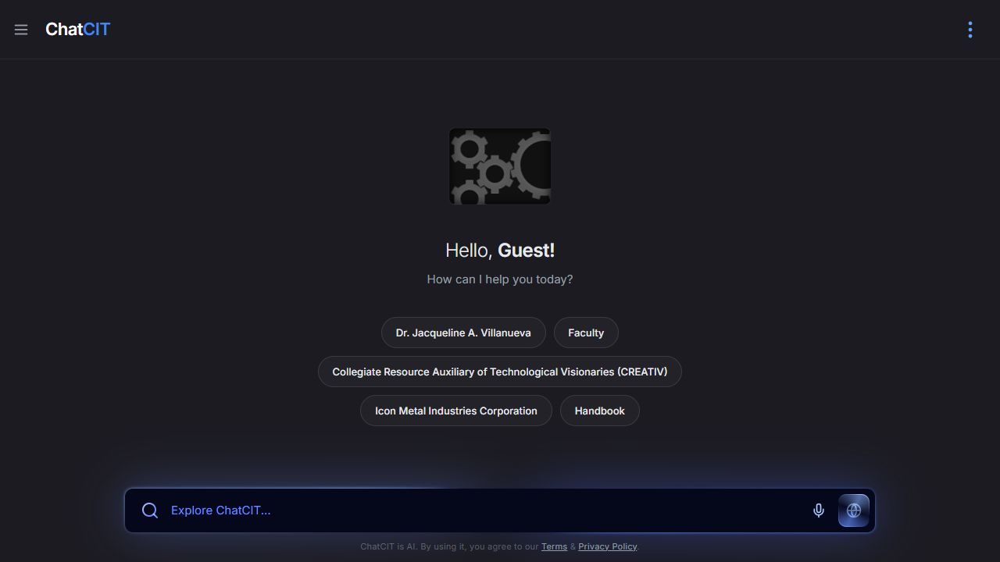

Front-end & core web
Building interfaces for the web.
OPEN TO INTERNSHIP OPPORTUNITIES
Aspiring Data Analyst
& Quality Assurance Intern
A curious mind. An eye for detail. A Computer Technology student bringing research, AI-assisted development, and a people-first approach to the workplace.
500 hours
2nd Semester A.Y. 2026–2027
Remote or onsite
01 / ABOUT ME
I’m a Computer Technology student at Bulacan State University’s College of Industrial Technology, working toward a career in data analysis or quality assurance.
I enjoy coding, research, and making information easier to understand, and I use AI-assisted development to support my work. Through my capstone role as a Data Analyst and Data Manager and my experience in student leadership, I aim to contribute careful information management, clear communication, and dependable teamwork to a partner company.
Beyond academics, you’ll find me playing online games or taking part in organizational work—a part of my college life since my first year.
Major in Computer Technology
Bulacan State University · College of Industrial Technology
Expected graduation: 202702 / MY TOOLKIT
Practical tools.
A willingness to keep learning.
Building interfaces for the web.
Developing with an AI-assisted approach.
Exploring layouts and visual ideas.
Organizing information and documenting work.
03 / FEATURED WORK
Research with a purpose.
Technology for the campus community.

AI-POWERED CAMPUS INFORMATION
Data Analyst & Data Manager
A web-based conversational kiosk capstone designed to make information about CIT enrollment, academic policies, faculty, and campus facilities easier to access. The project combines a conversational AI model with a kiosk interface to address repetitive inquiries and fragmented information sources.
InCITe: Interactive Conversational Information Terminal Experience
Explore live demo04 / BEYOND THE CLASSROOM
Student leadership has shaped how I communicate, coordinate work, and stay accountable to a team.
SPICE
Student organization leadership, collaboration, and coordination.
SPICE
Supporting organizational operations and student initiatives.
The Horn
Editorial work and written communication for a student publication.
RECOGNITION
LET’S CONNECT
Looking for a curious, committed OJT intern for your team? I’d love to discuss how I can contribute in data analysis or quality assurance.
Email me about an internshipSanta Maria / Bulacan / BGC / Makati
Remote or onsite · 500 training hours
2nd Semester, A.Y. 2026–2027